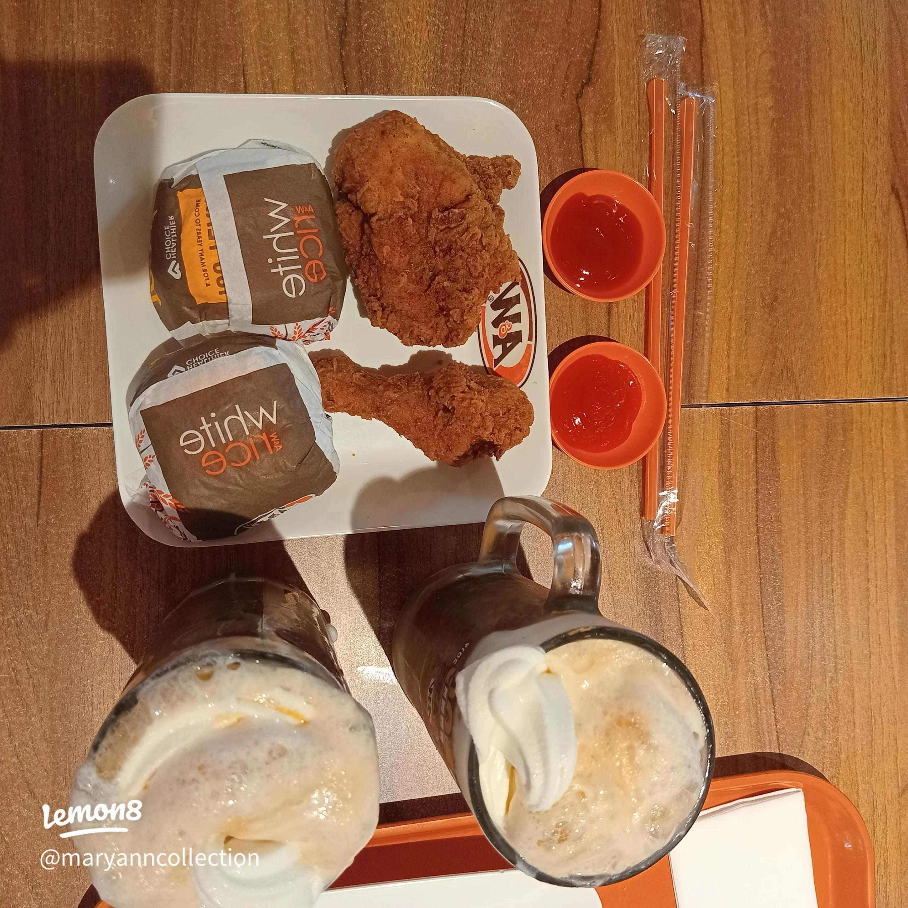
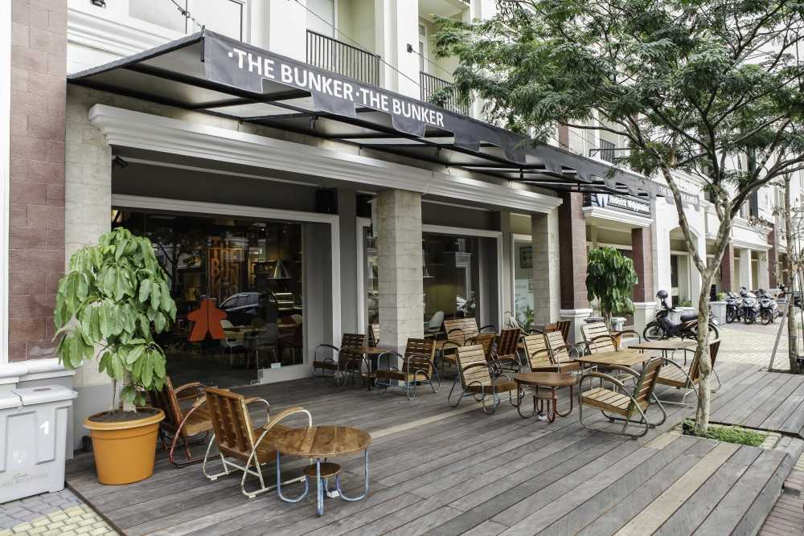
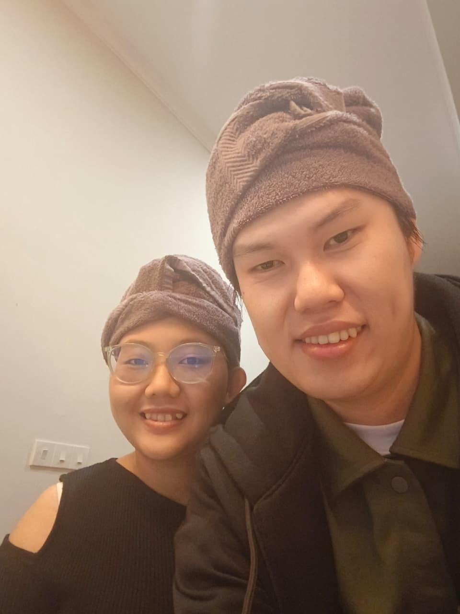
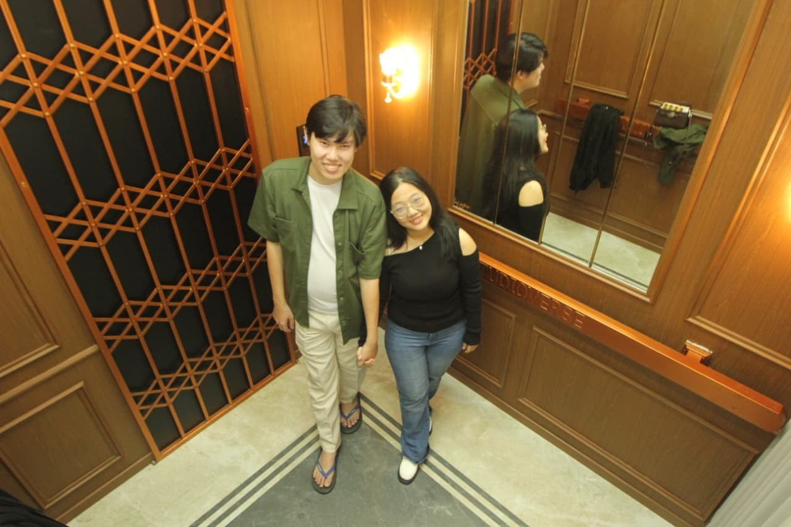
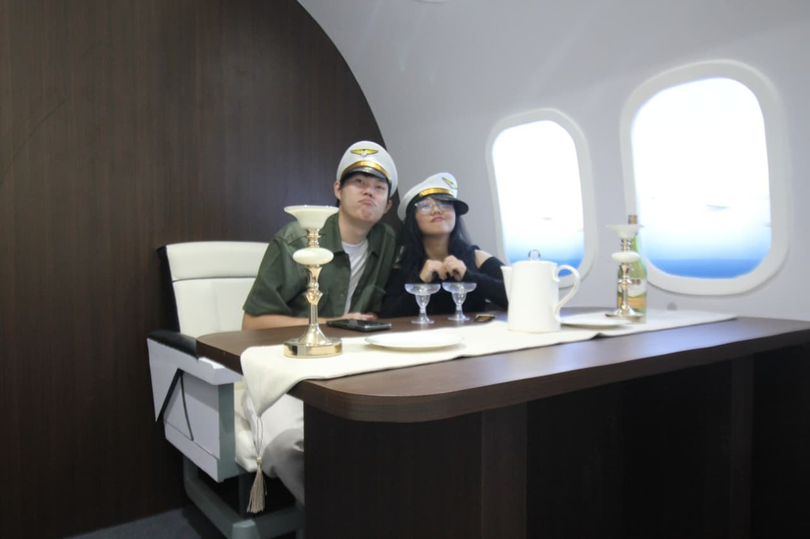
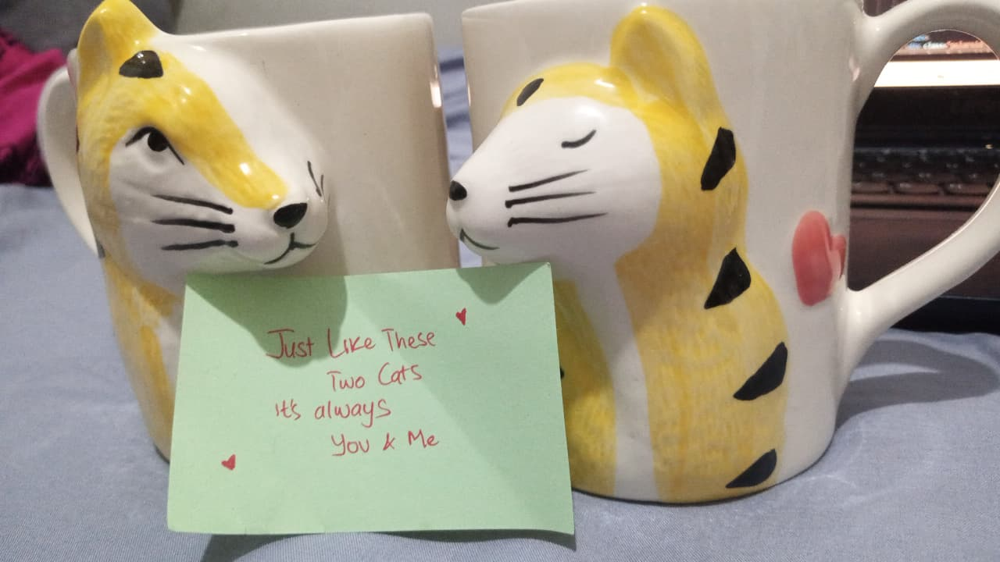
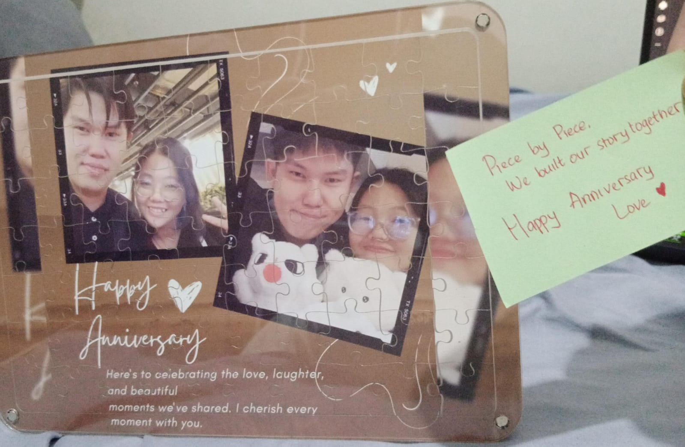
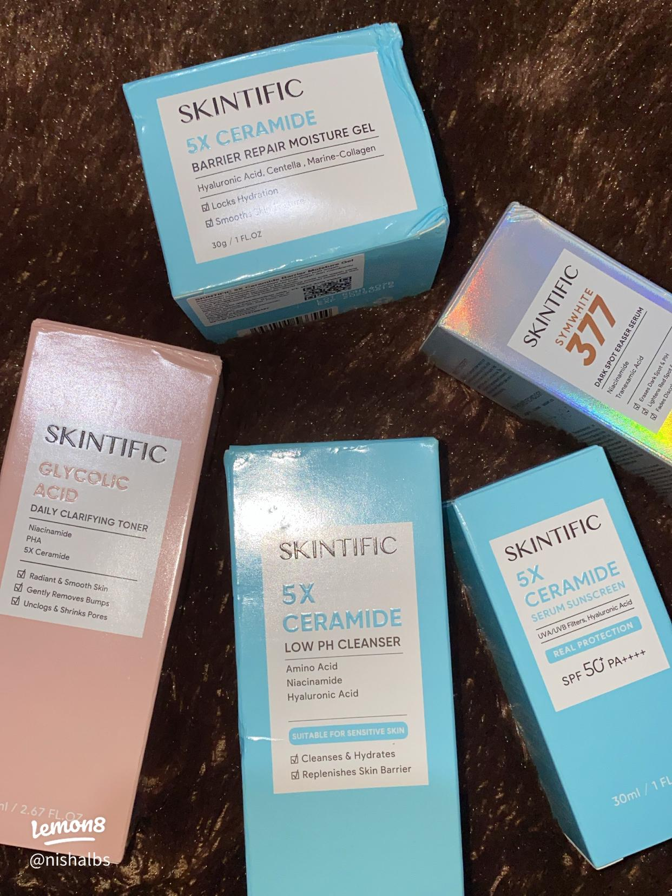
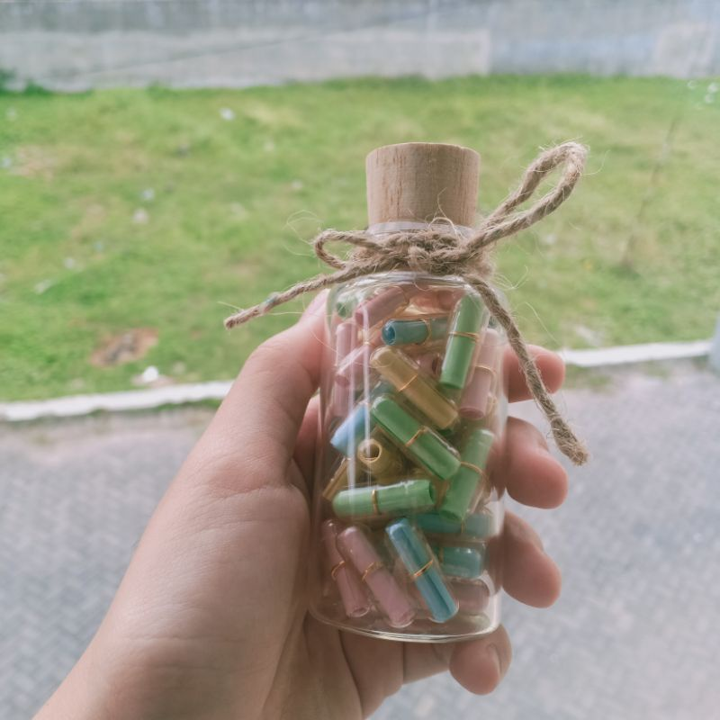
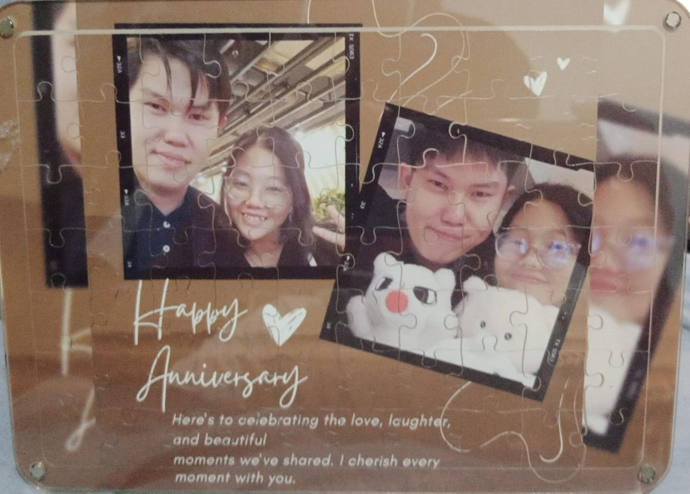

Semua rencana berantakan.
Tapi harinya sempurna.
aku, Wendy, sudah menyusun rencana dengan cermat untuk hari ini. Dari Kelapa Gading ke Cisauk, dengan empat rencana yang sudah dipikirkan matang-matang. Kue, kafe board game, Japanese spa, photo box, dinner mewah di Hampton Square.
Kereta terlambat. Kafe tidak ketemu. Perut kekenyangan soda. Kafe-kafe tutup. Hujan turun tiba-tiba. Makan bubur pun gagal.
Tapi di penghujung hari basah kuyup, pinjam baju, duduk berdua membuka kado sambil menunggu hujan aku sadar bahwa ini adalah hari anniversary terbaik yang bisa aku bayangkan.
Rencana awalnya sederhana yaitu sampai jam 10, buka kado bersama, dengan kue yang sudah dipesan lewat Grab. Tapi kereta dan mikrotrans punya rencana sendiri: keduanya terlambat.
Tiba jam 11.30, dan ternyata ada banyak orang di rumah. Masuk pun tidak sempat. tidak tau apa yang akan menanti.
Kami mencari kafe board game yang sudah diriset sebelumnya. Tapi dicari ke mana pun, tidak ketemu. Dari pagi belum makan, akhirnya kami mampir ke A&W makan ayam goreng dan Root Beer.
Perut kekenyangan soda. Tidak enak. Dan ironisnya, tepat saat kami hendak pulang, kafé board game-nya terlihat di depan mata. Tapi perut sudah terlanjur penuh.


Dua plan sudah gagal, masih ada dua jam sebelum rencana selanjutnya jam 16.00. Kami mencari air putih untuk mengurangi soda di perut, lalu muter-muter area Gading Serpong di bawah terik matahari.
Tidak ada tujuan. Hanya kami berdua di atas motor, dalam panas, dengan perut masih tidak enak. Tapi entah kenapa, bagian ini juga terasa menyenangkan.
Banyak kafe tutup. Satu yang buka, tidak terlalu dingin, tapi cukup untuk duduk istirahat. aku pesan latte, dan kamu pesan grey tea.
Tidak ada rencana di sini hanya duduk, ngobrol, dan memulihkan tenaga sebelum rencana berikutnya.
Ini rencana yang paling diam-diam aku siapkan. aku perhatikan rambut Aplia mulai bermasalah, dan aku tahu dia khawatir soal itu tapi tidak tahu harus ke mana. Jadi aku bawa dia ke Japanese hair spa, tanpa bilang tujuannya dulu.
Kami berkonsultasi dengan staff di sana, mendapat perawatan yang tepat, dan menghabiskan 1 jam 30 menit dengan puas. Dan tentu saja kami berfoto untuk kenangan.

Pertama kali kami pergi ke photo box, dan awalnya kami berdua canggung sekali tidak tahu harus pose apa, di mana berdiri, atau bagaimana mengoperasikannya.
Tapi setelah beberapa menit, kecanggungan itu hilang. Kami tertawa, berpose konyol, berpose serius. Latar lift vintage dan kabin pesawat VIP jadi background foto yang tidak akan kami lupakan.


Rencananya dinner romantis di dalam Hampton Square. Tapi Aplia sakit perut dan ingin makan bubur. Di area sana belum ada bubur akhirnya dinner pun ditiadakan.
Dalam perjalanan ke Cisauk, kilat mulai muncul di langit. Rencana beli kue dan makan malam dibatalkan. kita merasa selalu diberkatin dengan hujan, awal bertemu juga hujan dan sekarang merayakan anniversary juga hujan.
Dan kami sampai dengan basah.
aku meminjam baju Aplia. Duduk bersama di dalam rumah, mendengar hujan, dan akhirnya setelah seharian menunggu kami membuka kado bersama.
Kami memakai shio satu sama lain.
Supaya selalu membawa potongan kecil dari masing-masing,
ke mana pun pergi.
Bukan seperti yang direncanakan. Tapi lebih dari yang diharapkan.




Di antara semua kado malam itu, ada satu hal kecil yang maknanya besar sekali.
Aplia bilang ingin meletakkan foto puzzle itu di rumah Wendy.

Terimakasih untuk satu tahun bersamaku.
Aku tahu hari itu tidak berjalan seperti yang aku rencanakan. Kereta terlambat, kafe tidak ketemu, perut kenyang soda, hujan datang tiba-tiba hampir semua rencana yang aku susun dengan hati-hati, runtuh satu per satu.
Tapi kamu tidak pernah mengeluh. Kamu ikut saja, naik motor di tengah panas, duduk di kafe yang tidak terlalu dingin, basah kuyup di perjalanan pulang. Dan entah bagaimana, itu semua terasa menyenangkan karena ada kamu.
Aku tidak ingin mengecewakan kamu. Aku sungguh tidak ingin. Dan mungkin hari itu terasa seperti kegagalan dari sudut pandangku tapi dari sudut pandang yang lebih jujur, hari itu adalah hari yang tidak akan pernah bisa aku lupakan.
Aku ingin terus bersamamu. Bukan hanya di hari yang sempurna, tapi juga di hari yang berantakan seperti itu karena justru di situ aku belajar bahwa bersamamu, bahkan yang berantakan pun terasa cukup.
Dan kamu bilang ingin meletakkan foto puzzle itu di rumahku. Hal kecil itu aku simpan dalam hati. Terimakasih sudah memberiku lampu hijau dengan cara yang paling kamu, paling tulus.
Dengan sepenuh hati,
Satu tahun bersama bukan tentang hari-hari yang sempurna.
Tapi tentang memilih untuk tetap ada
di tengah panas, hujan, dan soda yang kekenyangan.
Terimakasih, Aplia.